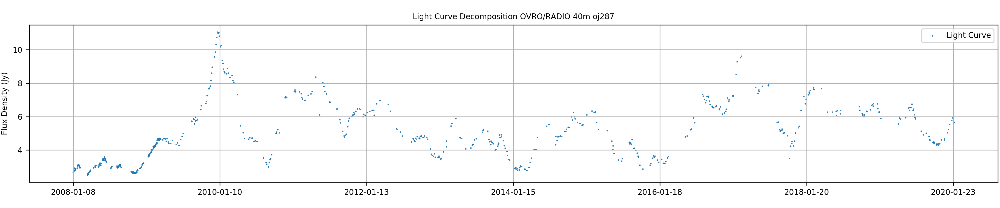
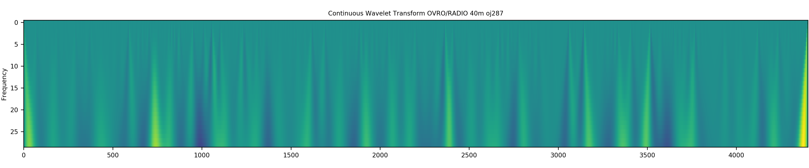
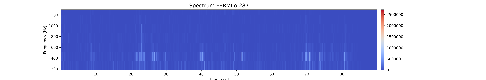
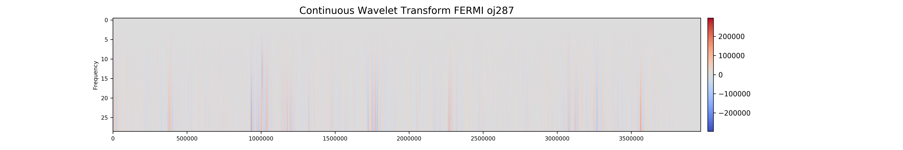
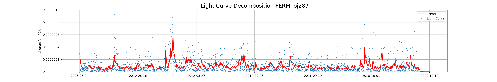

Instituto de Astronomía, Universidad Nacional Autónoma de México
Student: Gustavo Magallanes-Guijón
Advisor: Dr. Sergio Mendoza Ramos
Datasonification Oj287 Radio


Datasonification Oj287 Optical
Datasonification Oj287 X-Rays
Datasonification Oj287 Gamma


